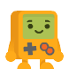
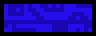
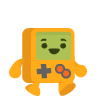
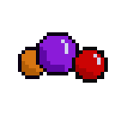
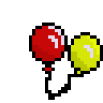
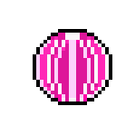

Instrucciones
Guía al payaso a través de plataformas evitando enemigos. Usa sus habilidades especiales para sobrevivir.
Guía al payaso a través de plataformas evitando enemigos. Usa sus habilidades especiales para sobrevivir.
Todas estas mecánicas aparecen de manera aleatoria al comienzo del mapa y están desactivadas. Salen de una en una y tienes que pasar por encima de ellas para agregarlas a tu inventario y poder usar la habilidad que hayas tomado.
Las plataformas son objetos que se pueden atravesar solo si estamos debajo de ellas.
Las plataformas son objetos que se pueden atravesar solo si estamos debajo de ellas.
Los enemigos son personajes que te atacan en el mapa, se mueven aleatoriamente y tienen solo un punto de vida. Cuando los tocas te bajan un punto de vida y si llegas a perder tres, has perdido la partida.
Vas a tener 3 disparos con bolas de malabares para poder derrotar a tus enemigos.
Al tomar los globos, se produce un cambio en la gravedad que te permitirá desplazarte por más distancia y flotar más alto.
Al montar una pelota gigante, obtendrás la habilidad de volverte invulnerable, lo que te permitirá superar obstáculos difíciles en la aventura del circo.
